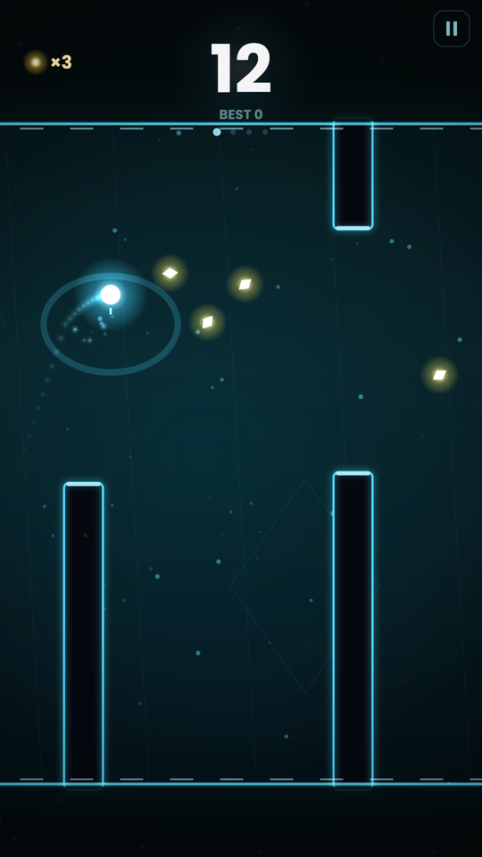
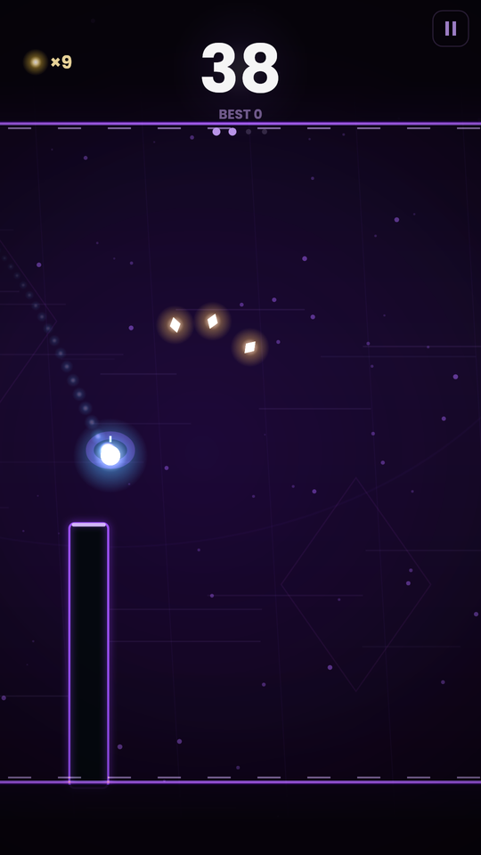
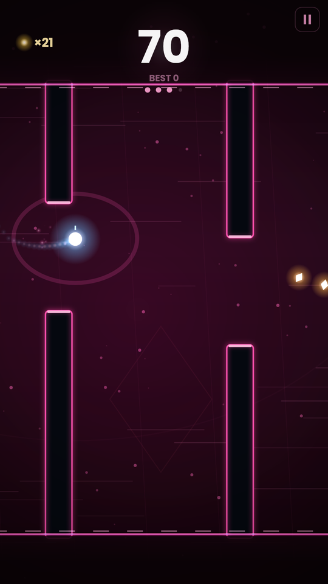
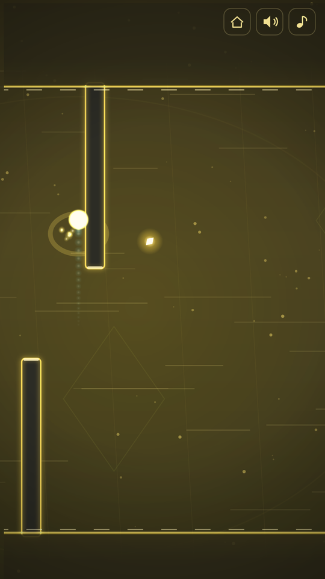

POLARITY
One tap flips gravity. Thread the neon tunnel.




Four stages, each faster and tighter than the last, with obstacles that arrive in time with the music. Ten hand-built patterns wait at fixed scores, so you learn them, dread them, and one day beat them.
About Polarity